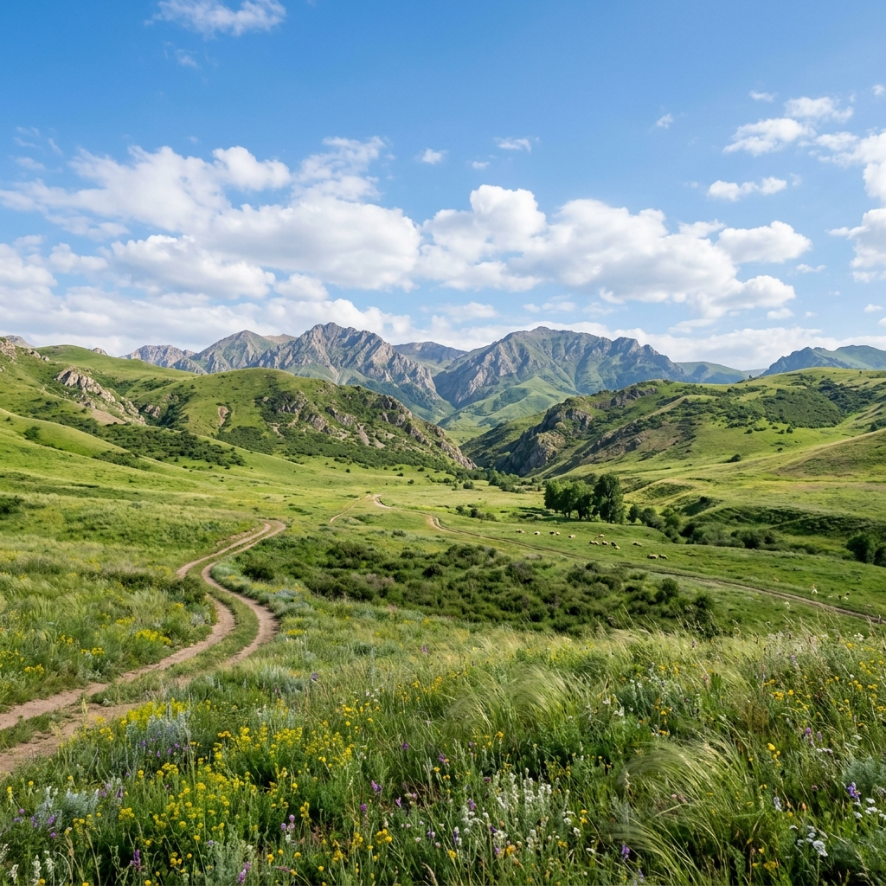
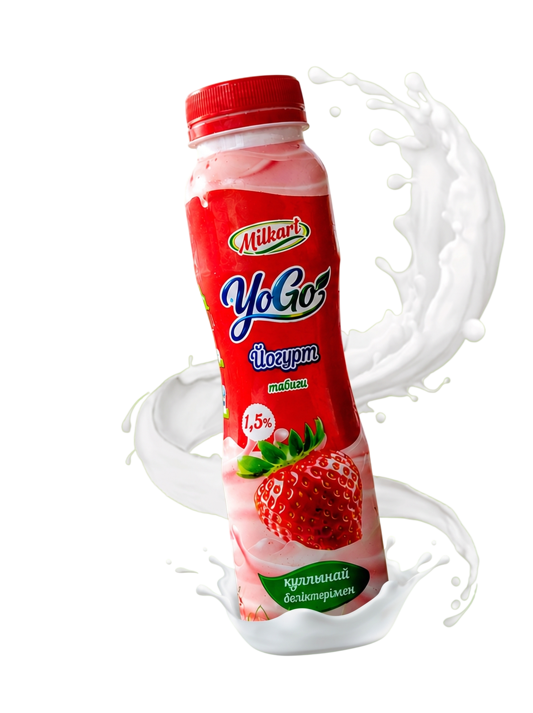
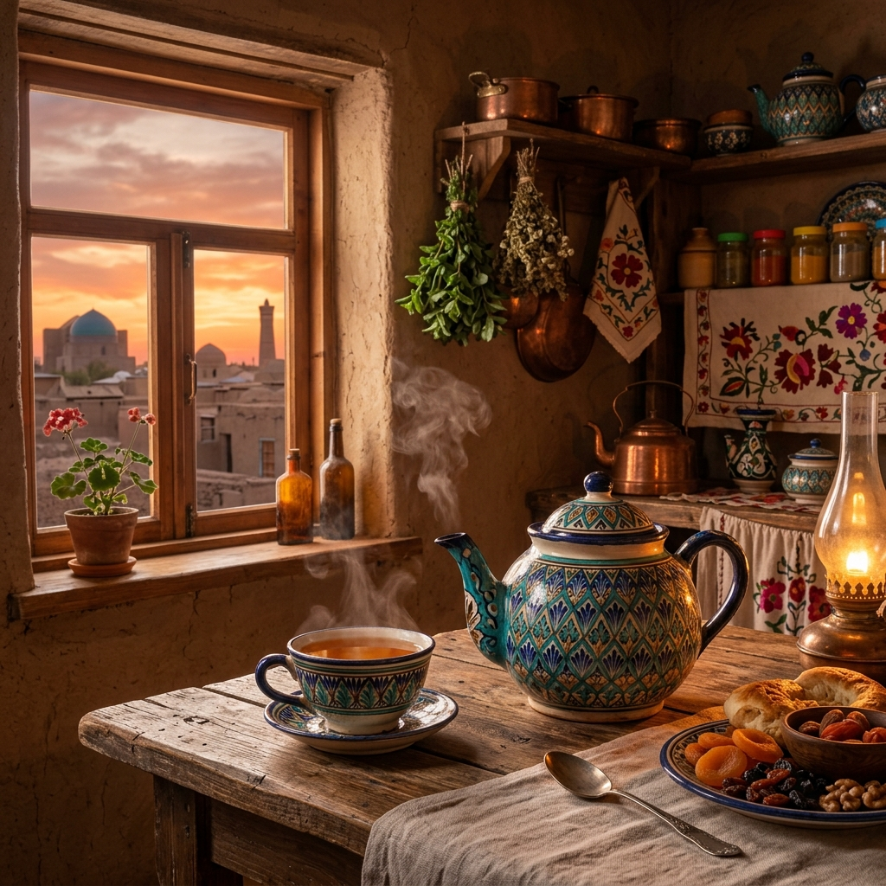

От Туркестана ко всей стране.
У нас есть конкретные цели. Мы идём к ним каждый день и измеряем путь реальными городами, продуктами и людьми.
Мы строим бренд национального масштаба.
Мы не просто производим молочную продукцию. Мы хотим, чтобы Milkart знали от Туркестана до каждого уголка Казахстана.
Стать лидером в йогуртах и айране.
Мы начали с трёх вкусов, сегодня их восемь. Линейка YoGo продолжает расти. Цель: бренд номер один в категории живых йогуртов и турецкого айрана по всей стране.



Выйти на рынок всего Казахстана.
Туркестан был стартом. Кентау и Кызылорда уже стали реальностью. Шымкент и сеть Magnum стоят на пороге. Дальше Алматы, Астана и вся страна.
- СейчасТуркестан, Кентау, Кызылорда
- ДалееШымкент
- СледомАлматы и Астана
- ЦельКаждый город Казахстана

Новые продукты. Новые горизонты.
Уже сейчас готовится новая кофейная серия с несколькими вкусами. Детали пока останутся в секрете, но это будет особенный запуск.

Качество для каждого.
Наша главная цель не изменится: делать продукт, который могут позволить себе все. Для семьи, ресторана и маленького магазина рядом с домом.
Это не просто амбиция. Это план, и мы уже в пути.